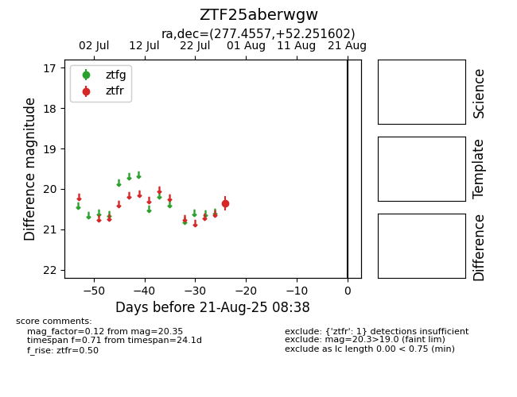

Target ZTF25aberwgw at 2025-08-21 08:38, see:
FINK: fink-portal.org/ZTF25aberwgw
Lasair: lasair-ztf.lsst.ac.uk/objects/ZTF25aberwgw
ALeRCE: alerce.online/object/ZTF25aberwgw
alt names
ZTF25aberwgw (ztf,alerce)
coordinates:
equatorial (ra, dec) = (277.4557,+52.25160)
galactic (l, b) = (80.9547,+24.32173)
photometry
last ztfr=20.35
1 ztfr detections
